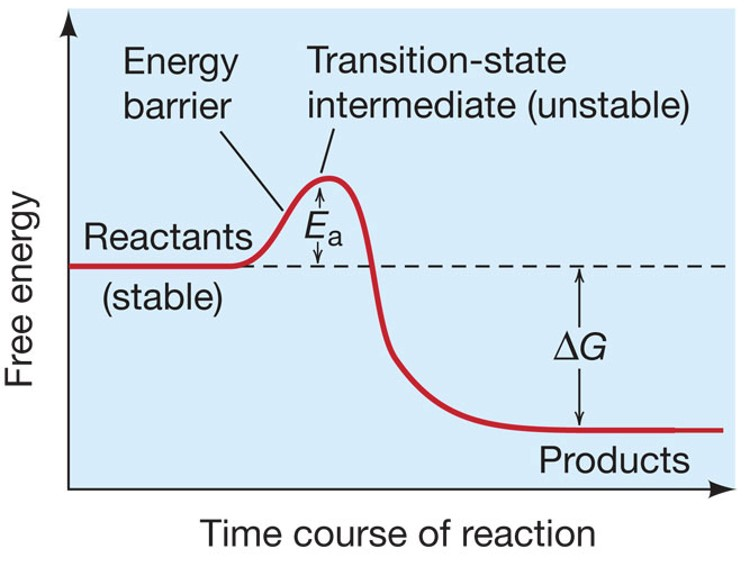
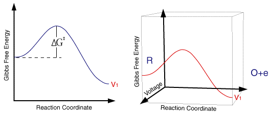

lipids (least mass)
lipids are generally insoluble in water, they are non polar
- high proportion of nonpolar c-h bonds.
- not polymers, not covalently bonded
- weak but additive van der waals, hydrophobic
- fats, oils, waxs, some vitamins and hormones.
functions
fats/oils store energy
phospholipids
carotenoids and chloophylss capture energy
steroids and modified fatty acids: membrane components and hormones and vitamins.

Fatty Acid: properties
- saturated: high melting point, animal
- unsaturated:
- composed of: glycerol, 2 fatty acids (nonpolar tails), phosphate (polar head)
- form all biological membranes
- micelles-lipid molecules orient with polar hydrophilic head toward water and nonpolar hy
Membrane composition: consider this...
- Optimal fluidity, is that of oliveoil
- Temperature effects the fluidity
- Lower T => lower LDL
- You don't want the phospholipids to be packed close together
- Have more c=c linkages to keep the phospholipid loose and optimally fluid.
- High T => High LDL
other Lipids that don't hvae glycerol-fatty acid structure
steroids: Multiple rings
waxes: Highly nonpolar, form protective coating.
review: compare sat. and unsat. 1. presence
chemical reactions
some reactions are slow because of an energy barrier - the amount of energy required to start.
transition state: ae puts the reactants in a reactive mode


- Ribozyme
- Properties of Enzymes
- reactants are substrates
- formed are products
- enzymatic reactions
- there are generally hydrophilic interactions among the substrate (peptidoglycan) and the active site.